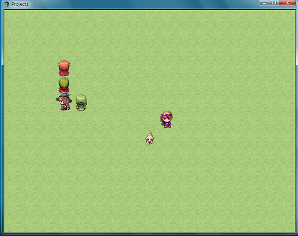
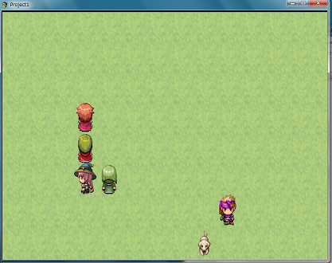

フィルタをかけると画面全体が拡大されてしまう
概要
以下のようなpixi.jsのオーバーレイフィルタをピクチャにかけると画面全体(マップ全体)が拡大されてしまう現象があるそうで、その解析をしていました。
$gameScreen.picture(1)._blendMode = PIXI.BLEND_MODES.OVERLAY;


ただ発生するのはスペックの低めのPCだけであり、通常は発生しないようです。
手持ちのPCで発生するのが一台あり、簡単なスペックは以下です。
Windows 7 Home Premium 32-bit
Core(TM) i5 CPU M 520
Intel(R) HD Graphics
オーバーレイについて
pixi.jsはデフォルトでは以下にコメントされているようにオーバーレイは利用できず、pixi-picture.jsを読み込むことによって利用できます。
ファイルはツクールMVのlibフォルダに存在していて自動的に読み込まれています。
IMPORTANT - The WebGL renderer only supports the NORMAL, ADD, MULTIPLY and SCREEN blend modes.
Anything else will silently act like NORMAL.
フィルタをかけると
ピクチャのblendModeをOVERLAYに変えると最終的に以下の箇所の処理が大きく変わります。
細かいことはおいといて、最終的にstageにvoidFilterが適用されるようになります。
ここでいうstageはScene_Mapです。
このvoidFilterは何もしないフィルターのはずですが、なぜかこれが適用されると拡大されます。
Scene_Mapに適用されるので画面全体が拡大されてしまいます。
Sprite.prototype._speedUpCustomBlendModes = function(renderer) {
var picture = renderer.plugins.picture;
var blend = this.blendMode;
if (renderer.renderingToScreen && renderer._activeRenderTarget.root) {
if (picture.drawModes[blend]) {
var stage = renderer._lastObjectRendered;
var f = stage._filters;
if (!f || !f[0]) {
setTimeout(function () {
var f = stage._filters;
if (!f || !f[0]) {
stage.filters = [Sprite.voidFilter];
stage.filterArea = new PIXI.Rectangle(0, 0, Graphics.width, Graphics.height);
}
}, 0);
}
}
}
};
ためしに、コンソールからSceneManager._scene.filters = [Sprite.voidFilter]と実行すると拡大されるのでOVERLAYフィルタの問題ではなく、このvoidFilterの影響だと考えられます。
voidFilterのpadding?
pixi.jsのfilterにはpaddingというメンバがあります。これはデフォルトで4に設定されていて、このpaddingを0に変えると拡大がなぜか直ります・・・。
pixi.jsのバージョンについて
この現象ですが最新のchromeでゲームをブラウザで起動しても発生します。
また、pixi.jsの4.7.1以降だと発生せず、4.7.0だと発生します(MVは4.5.4)。
解決策
paddingを0にするプラグインを作成しました。私のPCではこれで解決します。
また、これを適用してリリースして頂いたプロダクトは特に問題の報告もないようです。